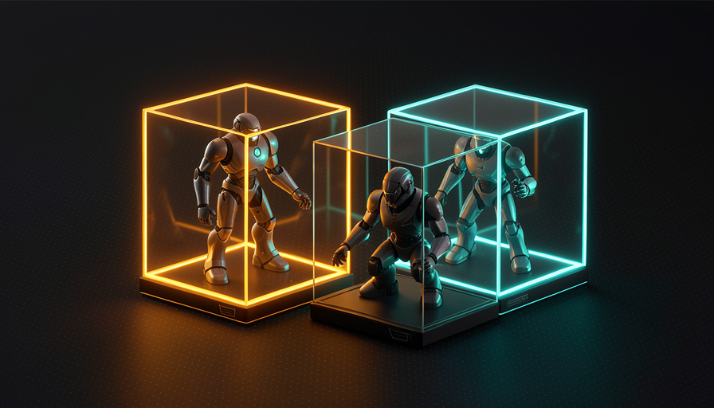
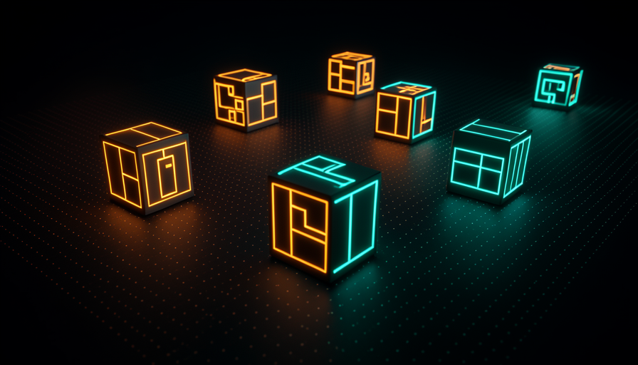
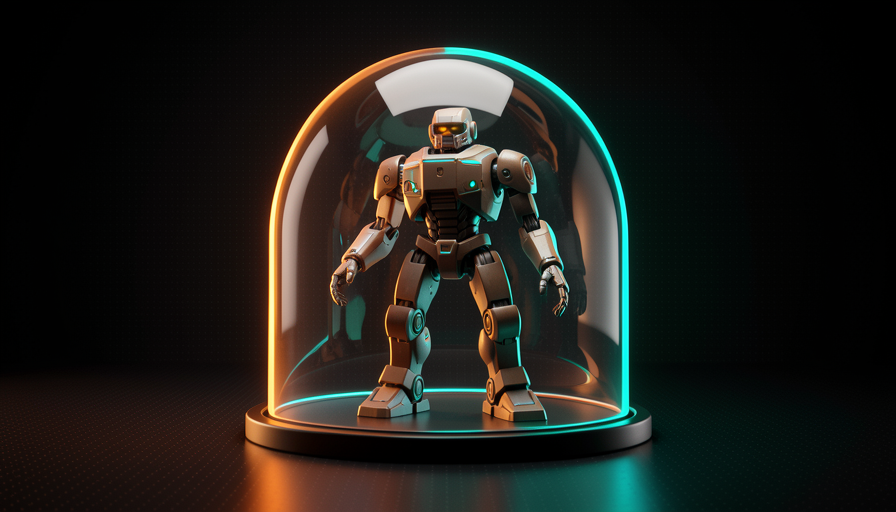

📖 Glossário vivo (leia antes — volte sempre que precisar)
Os termos-base (modelo, agente, harness, skill) você já fixou nas Trilhas 1-3. Aqui estão os termos novos deste módulo — todos de infraestrutura. Não decore: entenda a ideia de cada um:
⚡ Por que paralelizar
🧠 Imagine assim: você é o chefe de uma cozinha. Pode cozinhar um prato de cada vez, sozinho — ou pode ter cinco cozinheiros, cada um numa bancada, fazendo cinco pratos ao mesmo tempo. Você só passa as comandas e prova o resultado. A mesma noite rende cinco vezes mais.
No módulo 4.1 você viu o AFK (away from keyboard): em vez de aprovar cada passo, você dispara o agente e ele vai. Pocock descreve isso como o momento em que "entrou de verdade" na programação com IA, porque ele "remove você da equação" e abre uma porta nova: se o agente não precisa de você ao lado, você não precisa rodar um agente — pode rodar vários. É o que se chama paralelizar.
A imagem que ele usa é literal: "two, three, four, five of me" — dois, três, quatro, cinco de você, cada cópia tocando uma tarefa diferente. Enquanto um agente refatora um módulo, outro escreve testes, um terceiro corrige um bug. O gargalo deixa de ser "quanto código eu consigo escrever" e passa a ser "quantas tarefas bem-escopadas eu consigo despachar". O porquê é direto: o tempo do agente é barato e abundante; o seu é caro e escasso. Paralelizar troca o recurso escasso (você) pelo abundante (agentes). O erro comum aqui é querer paralelizar tarefas vagas ou que dependem uma da outra — aí os agentes se atropelam. Paralelize só o que é independente e tem escopo nítido (você treinou isso na Trilha 2, "delegação").
Em serial, as tarefas esperam na fila. Em paralelo, cada agente trabalha numa caixa própria, simultaneamente.

Em 1 frase: se o agente trabalha sozinho (AFK), você não roda um — roda uma frota, e o seu tempo deixa de ser o gargalo.
☢️ O risco de rodar sem sandbox
🧠 Imagine assim: você dá a chave da sua casa inteira a um estagiário muito rápido e muito confiante — e sai. Na maioria das vezes ele faz o trabalho. Mas se ele entende errado "limpe a bagunça", pode jogar fora coisas que você nunca recupera. Pior: pode anotar a senha do cofre e levar embora.
Aqui está a razão de tudo o que vem a seguir. Quando o agente trabalha AFK, ninguém está olhando enquanto ele executa comandos. Se ele roda direto na sua máquina, ele tem o seu poder: pode apagar arquivos, instalar coisas, ler segredos. Pocock é explícito sobre o que pode dar errado sem isolamento: o agente pode "delete your home directory" (apagar sua pasta pessoal — o famoso rm -rf que limpa tudo) ou "exfiltrate env vars" — fazer exfiltração das suas env vars (suas chaves de API e senhas).
Não é que o modelo seja "malvado". O problema é probabilidade: um agente que executa milhares de comandos sem supervisão vai, alguma hora, interpretar mal uma instrução, seguir um comando perigoso copiado de um README, ou cair num prompt injection escondido num arquivo. Quanto mais você paraleliza (tópico 1), mais comandos rodam sem ninguém olhando — então o risco cresce junto com a produtividade. O erro comum é achar "comigo nunca aconteceu, então é seguro". A regra de ouro do AFK é: nunca dê ao agente sem supervisão um poder que você não estaria disposto a perder. A resposta para isso é o tópico 3: a sandbox.

⚠️ Erro comum de iniciante
Liberar "aceitar tudo / não me pergunte" (modo sem confirmações) num agente que roda na sua máquina, sem isolamento. É exatamente a combinação que Pocock aponta como perigosa: AFK + sem sandbox = você confia 100% num processo que executa comandos sem ninguém revisando.
Em 1 frase: um agente AFK na sua máquina nua pode apagar sua pasta pessoal ou vazar suas chaves — o risco é real, não teórico.
🏰 Sand Castle
🧠 Imagine assim: um castelo de areia na praia. As crianças constroem, derrubam, refazem — e nada disso afeta a sua casa. Se uma onda leva tudo, ninguém se importa: era pra ser descartável. A sandbox é exatamente isso para o agente.
A solução do tópico 2 é dar ao agente uma sandbox — uma caixa de areia isolada onde ele pode fazer o que quiser sem tocar a sua máquina. A ferramenta que Pocock usa para isso se chama Sand Castle (castelo de areia): ela "roda agentes em sandboxes" e os orquestra. É o coração do setup AFK dele — "a maior parte do meu trabalho é AFK", e esse trabalho acontece dentro do Sand Castle, não na máquina nua. A ideia central: cada agente ganha um ambiente próprio, isolado e descartável.
Por que isso destrava tudo? Porque resolve os dois problemas de uma vez. (1) Segurança: se o agente tentar rm -rf ou ler suas env vars, ele só alcança o que está dentro da caixa — sua pasta pessoal e suas chaves reais ficam de fora. (2) Paralelismo: como cada caixa é independente, você pode abrir dez delas sem que um agente atrapalhe o outro. Pocock combina o Sand Castle com GitHub Actions (você vê no módulo 4.3) e diz que é "unreasonably effective" — absurdamente eficaz — porque você "paraleliza o quanto quiser, sem se preocupar com os recursos locais". O erro comum: tratar a sandbox como opcional ("depois eu configuro"). Ela é o pré-requisito do AFK em paralelo, não um luxo.

🔬 Exemplo resolvido: a mesma tarefa perigosa, com e sem sandbox
Tarefa AFK: "limpe os arquivos temporários do projeto e rode a build". O agente, por engano, monta um comando amplo demais: rm -rf ~/ (apagar a pasta pessoal inteira). Veja os dois desfechos:
Sem sandbox (na máquina nua)
O comando roda com o seu usuário. Sua pasta pessoal some — fotos, configs, chaves SSH. Não há "desfazer". Você descobre quando volta ao teclado, horas depois.
Com sandbox (Sand Castle)
O ~/ da caixa é vazio e isolado. O comando apaga só o conteúdo da própria sandbox. Você joga a caixa fora, lê o log, ajusta o prompt e dispara de novo. Dano real: zero.
Indo mais fundo (opcional): por que o nome "Sand Castle"?
A metáfora encadeia com "sandbox" (caixa de areia). Se a sandbox é a caixa onde o agente brinca, o Sand Castle é o que você constrói com várias caixas: ele cria, gerencia e paraleliza muitas sandboxes ao mesmo tempo, como um castelo feito de muitos baldes de areia. E, como castelo de areia de verdade, cada caixa é efêmera — feita para ser derrubada e refeita sem custo.
Em 1 frase: Sand Castle dá a cada agente um castelo de areia próprio — ele pode derrubar tudo lá dentro sem nunca tocar a sua casa.
🐳 Docker / Podman
🧠 Imagine assim: um contêiner de navio. Não importa o que vai dentro — eletrônicos, frutas, móveis — a caixa tem o mesmo formato, fecha igual e é selada. Você empilha quantos quiser, e o que está num não vaza pro outro. Containers de software são a mesma ideia.
Por baixo, a sandbox geralmente é um container. As duas ferramentas mais comuns para criar containers na sua própria máquina são Docker e Podman — Pocock cita exatamente essas como base das sandboxes locais. Você descreve a caixa num arquivo de receita (qual sistema, quais bibliotecas, qual código entra) e a ferramenta monta um ambiente isolado a partir dela. O agente roda lá dentro com acesso só ao que você colocou na caixa — nada do resto da máquina.
A diferença prática entre os dois é pequena para o nosso uso: Docker é o mais popular e tem um "daemon" (um serviço rodando o tempo todo) com privilégios elevados; Podman faz quase o mesmo, mas sem daemon e podendo rodar "rootless" (sem privilégios de administrador), o que muita gente prefere por segurança. Para o agente, ambos entregam o que importa: isolamento (o que acontece na caixa fica na caixa) e descartabilidade (terminou ou deu ruim, você apaga o container e abre outro limpo em segundos). O erro comum é confundir container com máquina virtual: o container é muito mais leve e rápido de subir, por isso dá pra abrir dezenas para paralelizar — algo inviável com VMs pesadas.
Containers leves empilham sobre uma máquina só — cada um isolado, cada um com um agente. É assim que a frota paraleliza.
# Rodar um agente DENTRO de uma sandbox (container Docker ou Podman).
# Troque "docker" por "podman" — os comandos são compatíveis.
docker run --rm -it \
--name agente-1 \ # nome da caixa; --rm = some ao terminar
--network none \ # SEM rede: bloqueia exfiltração de chaves
--memory 4g --cpus 2 \ # limites de recurso por agente
-v "$PWD":/work -w /work \ # monta SÓ esta pasta (não a home inteira)
agent-sandbox:latest \ # imagem com Node, git e o CLI do agente
claude --dangerously-skip-permissions \
-p "Implemente a issue #795 e rode os testes"
# Frota: rode em paralelo, um container por tarefa (cada um isolado).
for n in 1 2 3 4; do
docker run --rm -d --name "agente-$n" --network none \
-v "$PWD/worktree-$n":/work -w /work agent-sandbox:latest \
claude --dangerously-skip-permissions -p "$(cat tarefas/$n.md)"
done
# Alternativa pronta: deixe o Sand Castle orquestrar as sandboxes por você.
# npx sandcastle run --parallel 4 --queue ./tarefas
Em 1 frase: Docker e Podman criam containers leves e descartáveis na sua máquina — a forma local de dar uma caixa isolada a cada agente.
☁️ Vercel sandboxes
🧠 Imagine assim: em vez de cozinhar tudo na sua cozinha (que esquenta, suja e tem espaço limitado), você aluga cozinhas industriais por hora, na cidade. Cada cozinheiro usa uma; quando acaba, devolve. A sua casa nunca é usada — e você pode alugar dez de uma vez.
Containers locais (tópico 4) usam os recursos da sua máquina: CPU, memória, disco. Se você abre dez agentes pesados, seu notebook ferve. A alternativa que Pocock cita são as Vercel sandboxes — sandboxes que rodam na nuvem, na infraestrutura da Vercel. O isolamento é o mesmo (cada agente na sua caixa), mas o "computador" que sofre é o deles, não o seu.
É exatamente o que ele resume ao combinar tudo com GitHub Actions: você "paraleliza o quanto quiser, sem se preocupar com recursos locais". Esse é o ganho principal da sandbox na nuvem — você desacopla a escala de agentes da potência do seu hardware. Quer rodar 1 ou 50 agentes? O seu notebook continua frio e livre para você trabalhar. O trade-off (e o erro comum de ignorá-lo): a nuvem custa dinheiro por tempo de execução e os segredos passam por servidores de terceiros — então você ainda configura quais env vars entram na caixa e mantém o princípio do tópico 2 (dar só o mínimo necessário). Local (Docker/Podman) é grátis e privado, mas limitado ao seu hardware; nuvem (Vercel) escala sem limite, mas cobra e exige cuidado com segredos.
Recuperação rápida: qual é a vantagem principal de uma sandbox na nuvem (Vercel) sobre uma local (Docker)?
Em 1 frase: Vercel sandboxes movem as caixas para a nuvem — você escala a frota sem fritar (nem ocupar) o seu próprio computador.
🛰️ Frota em paralelo
🧠 Imagine assim: um controlador de tráfego aéreo. Ele não pilota nenhum avião — ele despacha vários, cada um na sua rota e na sua altitude, e só intervém quando algo precisa de decisão. Quanto mais organizado o espaço aéreo, mais aviões voam ao mesmo tempo, em segurança.
Juntando tudo: sandbox (isolamento) + paralelizar (vários agentes) = uma frota que trabalha por você. O caminho mental é uma escada: (1) você dispara AFK em vez de aprovar passo a passo; (2) cada agente vai para a sua sandbox (Sand Castle, sobre Docker/Podman ou Vercel), então nenhum pode apagar sua pasta pessoal nem vazar suas chaves; (3) como as caixas são isoladas, você abre quantas quiser. Pocock chama isso de "unreasonably effective": combinado com GitHub Actions (módulo 4.3), você "paraleliza o quanto quiser, sem se preocupar com recursos locais". O seu papel muda — de quem digita código para quem despacha e revisa uma frota. Antes de soltar a frota, rode este checklist:
Antes de soltar a frota de agentes AFK em paralelo: [ ] SANDBOX — cada agente roda numa caixa isolada (Sand Castle / Docker / Podman / Vercel)? [ ] SEGREDOS — só as env vars mínimas entram na caixa? (rede off ou restrita?) [ ] ESCOPO — cada tarefa é independente e bem-escopada (não dependem uma da outra)? [ ] DESCARTÁVEL — se uma caixa der ruim, eu jogo fora sem perder nada real? [ ] SAÍDA — o resultado sai como PR/commit pra eu revisar (não direto na main)? Se algum falhar: NÃO paralelize ainda. Conserte o harness primeiro.
Recuperação rápida: por que a sandbox é o que destrava rodar muitos agentes em paralelo?
Em 1 frase: sandbox isola o risco e o isolamento libera a escala — é isso que transforma "um agente" numa frota que você só despacha e revisa.
🧾 Resumo do Módulo
Próximo módulo:
4.3 — GitHub Actions + agentes: AFK na nuvem, agentes que rodam num PR e entregam o trabalho como pull request.